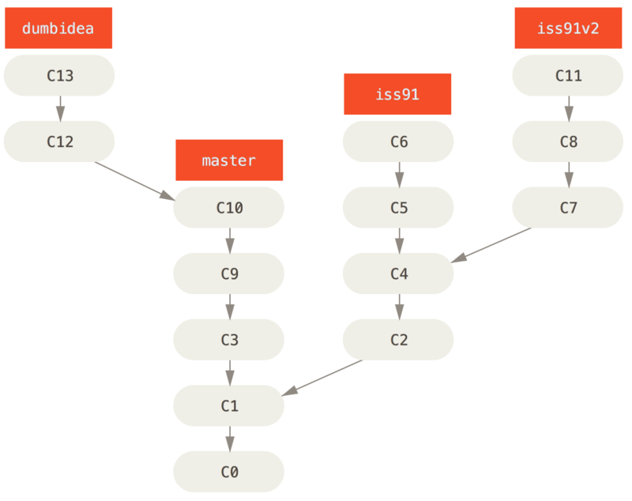
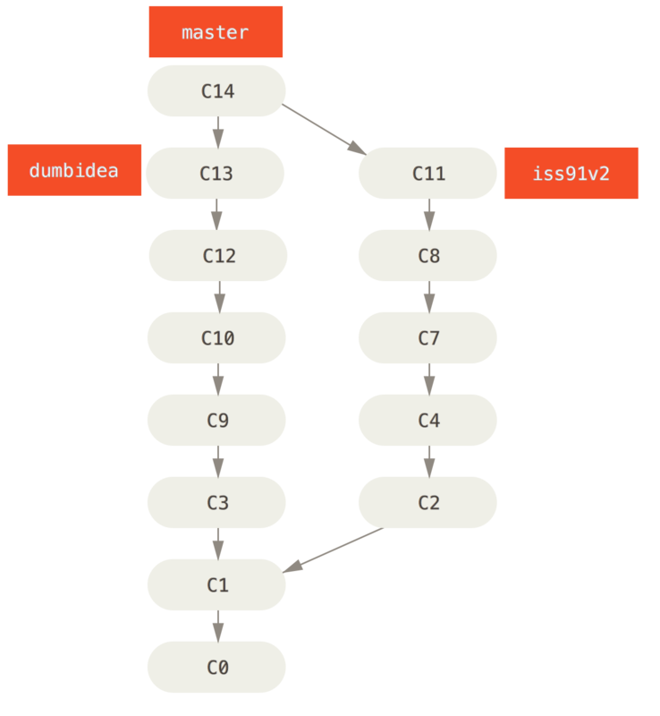

分支开发工作流
现在你已经学会新建和合并分支，那么你可以或者应该用它来做些什么呢？ 在本节，我们会介绍一些常见的利用分支进行开发的工作流程。而正是由于分支管理的便捷，才衍生出这些典型的工作模式，你可以根据项目实际情况选择一种用用看。
长期分支
因为 Git 使用简单的三方合并，所以就算在一段较长的时间内，反复把一个分支合并入另一个分支，也不是什么难事。 也就是说，在整个项目开发周期的不同阶段，你可以同时拥有多个开放的分支；你可以定期地把某些特性分支合并入其他分支中。
许多使用 Git 的开发者都喜欢使用这种方式来工作，比如只在 master 分支上保留完全稳定的代码——有可能仅仅是已经发布或即将发布的代码。
他们还有一些名为 develop 或者 next 的平行分支，被用来做后续开发或者测试稳定性——这些分支不必保持绝对稳定，但是一旦达到稳定状态，它们就可以被合并入 master 分支了。
这样，在确保这些已完成的特性分支（短期分支，比如之前的 iss53 分支）能够通过所有测试，并且不会引入更多 bug 之后，就可以合并入主干分支中，等待下一次的发布。
事实上我们刚才讨论的，是随着你的提交而不断右移的指针。 稳定分支的指针总是在提交历史中落后一大截，而前沿分支的指针往往比较靠前。
Figure 1. 渐进稳定分支的线性图
通常把他们想象成流水线（work silos）可能更好理解一点，那些经过测试考验的提交会被遴选到更加稳定的流水线上去。

Figure 2. 渐进稳定分支的流水线（“silo”）视图
你可以用这种方法维护不同层次的稳定性。
一些大型项目还有一个 proposed（建议） 或 pu: proposed updates（建议更新）分支，它可能因包含一些不成熟的内容而不能进入 next 或者 master 分支。
这么做的目的是使你的分支具有不同级别的稳定性；当它们具有一定程度的稳定性后，再把它们合并入具有更高级别稳定性的分支中。
再次强调一下，使用多个长期分支的方法并非必要，但是这么做通常很有帮助，尤其是当你在一个非常庞大或者复杂的项目中工作时。
特性分支
特性分支对任何规模的项目都适用。
特性分支是一种短期分支，它被用来实现单一特性或其相关工作。
也许你从来没有在其他的版本控制系统（VCS）上这么做过，因为在那些版本控制系统中创建和合并分支通常很费劲。
然而，在 Git 中一天之内多次创建、使用、合并、删除分支都很常见。
你已经在上一节中你创建的 iss53 和 hotfix 特性分支中看到过这种用法。
你在上一节用到的特性分支（iss53 和 hotfix 分支）中提交了一些更新，并且在它们合并入主干分支之后，你又删除了它们。
这项技术能使你快速并且完整地进行上下文切换（context-switch）——因为你的工作被分散到不同的流水线中，在不同的流水线中每个分支都仅与其目标特性相关，因此，在做代码审查之类的工作的时候就能更加容易地看出你做了哪些改动。
你可以把做出的改动在特性分支中保留几分钟、几天甚至几个月，等它们成熟之后再合并，而不用在乎它们建立的顺序或工作进度。
考虑这样一个例子，你在 master 分支上工作到 C1，这时为了解决一个问题而新建 iss91 分支，在 iss91 分支上工作到 C4，然而对于那个问题你又有了新的想法，于是你再新建一个 iss91v2 分支试图用另一种方法解决那个问题，接着你回到 master 分支工作了一会儿，你又冒出了一个不太确定的想法，你便在 C10 的时候新建一个 dumbidea 分支，并在上面做些实验。
你的提交历史看起来像下面这个样子：

Figure 3. 拥有多个特性分支的提交历史
现在，我们假设两件事情：你决定使用第二个方案来解决那个问题，即使用在 iss91v2 分支中方案；另外，你将 dumbidea 分支拿给你的同事看过之后，结果发现这是个惊人之举。
这时你可以抛弃 iss91 分支（即丢弃 C5 和 C6 提交），然后把另外两个分支合并入主干分支。
最终你的提交历史看起来像下面这个样子：

Figure 4. 合并了
dumbidea 和 iss91v2 分支之后的提交历史我们将会在 [_distributed_git] 中向你揭示更多有关分支工作流的细节，因此，请确保你阅读完那个章节之后，再来决定你的下个项目要使用什么样的分支策略（branching scheme）。
请牢记，当你做这么多操作的时候，这些分支全部都存于本地。 当你新建和合并分支的时候，所有这一切都只发生在你本地的 Git 版本库中 —— 没有与服务器发生交互。